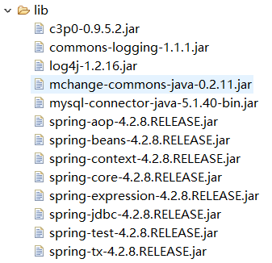
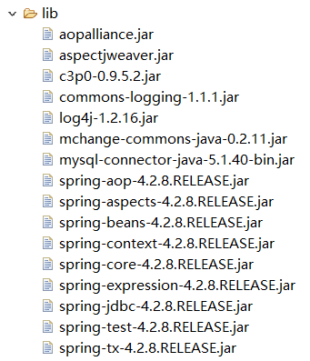
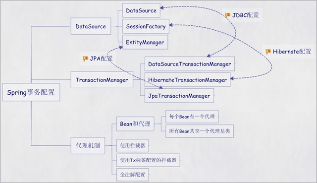

Spring-事务
Spring-事务回顾：任务目标一. SpringEL入门1. 准备工作2. 需要导入jar包二.SpringEL核心接口1. 核心接口介绍2. EvaluationContext接口三. SpEL基础表达式1. 文本字符解析器2. 对象属性解析3. 数组,集合类型解析4. 方法解析5. 操作符解析6. 赋值操作四. 在Spring中使用SpEL1. 基于XML配置2. 引用其他bean属性五. Spring JDBC 数据访问1. JdbcTemplate入门1.1 创建项目1.2 创建数据库1.3 测试代码2. Spring管理JdbcTemplate1. 创建Role.java2. RoleDao.java3. 创建RoleDaoImpl.java4. 创建数据库配置文件5.编写IOC配置六. Spring事务管理1、复习事务相关概念1.1、什么是事务(Transaction)1.2、为什么要使用事务？1.3、事务的特性1.4、事务的并发问题1.5、事务的隔离级别2. 转账案例1.创建项目2. 创建数据库3. 创建dao接口4. 创建dao实现类5. 创建service接口6. 创建service实现类7. 添加ioc配置文件3. Spring XML配置声明事务3.1. TransactionManager3.2 接口的定义3.3添加tx命名空间3.4. 添加事务相关配置4.编程式的事务管理5. 使用注解方式添加事务5.1 使用@Transactional注解5.2 @Transactional其他方面介绍附录1：Spring模块介绍1、core - 核心模块2、Data Access/Integration - 数据访问与集成3、Web4、AOP5、Instrumentation6、Messaging - 消息处理7、Test复习作业面试题
回顾：
1. AOP基本原理 2. 在Spring中使用AOP 3. 昨天作业的讲解
任务
1. SpEL的介绍和使用 2. Spring JDBC的使用 3. Spring中事务的处理
目标
1. 掌握SpEL的使用 2. 掌握Spring JDBC的使用 3. 掌握Spring中事务的处理
一. SpringEL入门
Spring动态语言(简称SpEL) 是一个支持运行时查询和操作对象图的强大的动态语言,语法类似于EL表达式,具有诸如显示方法和基本字符串模板函数等特性.
1. 准备工作
项目:spring-el
2. 需要导入jar包
spring-expression.jar
maven项目pom文件添加:
xxxxxxxxxx<dependency> <groupId>org.springframework</groupId> <artifactId>spring-expression</artifactId> <version>4.3.10.RELEASE</version></dependency>测试:
xxxxxxxxxx/** * 在SpEL中,使用表达式非常简单,只需创建一个SpelExpressionParser实例即可,也就是首先创建一个SpEL *表达式解析器,然后调用ExpressionParser#parseExpression()方法对表达式进行解析,其中单引号表示 *String类型. */public class SpelHello { public static void main(String [] args){ //TODO 测试SPRINGEL表达式 ExpressionParser parser = new SpelExpressionParser(); Expression exp = parser.parseExpression("'hello'+'world'"); String value = (String) exp.getValue(); System.out.println(value); //helloworld }}注意: SpEL被设计成一个可独立运行的模块,可以脱离Spring容器直接运行,因此只需引入SpEL的模块spring-expression即可,无须引入Spring的其他框架,接下来,在代码中就可以使用SpEL提供表达式解析类.
二.SpringEL核心接口
SpringEL的核心接口和核心类全部位于 org.springframework.expression包及其子包,以及spel.support中.
1. 核心接口介绍
ExpressionParser: 解析表达式字符串,表达式字符串是一个用单引号标注或者用转义的双引号标注的字符串.
Expression: 接口用来计算表达式字符串值
SpringEL支持一系列功能特性,比如方法调用,属性调用及构造器调用.
例如:
xxxxxxxxxx public void test1(){ //TODO 测试SPRINGEL表达式解析函数 ExpressionParser parser = new SpelExpressionParser(); Expression exp = parser.parseExpression("'hello'+'world'.concat('!!!')"); String value = (String) exp.getValue(); System.out.println(value); //输出结果helloworld!!! }2. EvaluationContext接口
EvaluationContext接口提供了属性,方法,字段解析器及类型转化器.默认实现类StandardEvaluationContext的内部使用反射机制来操作对象.为了提高性能,在其内部会对已获取的Method,Field和Constructor实例进行缓存.
示例:
xpublic void test2(){ //TODO 测试 EvaluationContext User user = new User(); user.setUserName("张三"); user.setCredits(100); ExpressionParser parser = new SpelExpressionParser(); /** * 创建一个 StandardEvaluationContext实例,指定一个跟对象作为求值目标对象,这样在求值表达式中就可以引用根 * 对象属性.在求值内部可以使用反射机制从注册对象中获取相应的属性. */ EvaluationContext context = new StandardEvaluationContext(user); String userName = (String) parser.parseExpression("userName").getValue(context); System.out.println(userName); }示例:
操作类Simple:
xxxxxxxxxxpublic class Simple { public List<Boolean> booleansList = new ArrayList<Boolean>();}测试:
xxxxxxxxxx public void test3(){ //TODO 测试 EvaluationContext //1 Simple simple = new Simple(); simple.booleansList.add(true); //给Simple对象 属性的集合中添加一个值 //2 StandardEvaluationContext simpleContext = new StandardEvaluationContext(simple); ExpressionParser parser = new SpelExpressionParser(); //3 Expression expression = parser.parseExpression("booleansList[0]"); //4 expression.setValue(simpleContext,"false"); //5 Boolean bl = simple.booleansList.get(0); System.out.println("bl---->"+bl); //输出结果: b1 - false }- 创建测试类对象,给予booleansList集合设置值
- 创建StandardEvaluationContext的内部使用反射机制创建Simple操作对象.
- 创建SpEL表达式
- 给SpEL表达式设置操作上下文对象. 以及设置对应的值
- 获取修改后的结果!
三. SpEL基础表达式
1. 文本字符解析器
文本表达式支持字符串,日期,数字(正数,实数及十六进制数),布尔类型及null,其中字符串需使用单引号或者反斜杠+双引号包含起来,如" 'String类型' " , " \"String类型\" ",单引号字符可使用 " \' " 表示.
练习:
xxxxxxxxxxpublic void test4(){ //TODO SpEL基本类型解析 ExpressionParser parser = new SpelExpressionParser(); //1.解析字符串 String hellworld =(String) parser.parseExpression("\"hello world\"").getValue(); //2.解析双精度浮点 double doubleNumber = (Double) parser.parseExpression("3.1415926").getValue(); //3.解析整数 int maxValue = (Integer) parser.parseExpression("0xFFFFFF").getValue(); //4.解析boolean类型 boolean value = (Boolean) parser.parseExpression("true").getValue(); //5.解析空值 Object nullValue = parser.parseExpression("null").getValue(); System.out.println(hellworld+doubleNumber+maxValue+value+nullValue);}2. 对象属性解析
在SpringEL中,可使用类似 "xxx.yyy.zzz" 的对象属性路径轻松的访问对象属性值.
创建Place类:
xxxxxxxxxxpublic class Place { private String city; public Place(String city) { this.city = city; } public String getCity() { return city; } public void setCity(String city) { this.city = city; }}创建User类:
xxxxxxxxxxpublic class User { private String userName; private Integer credits; private Place place; public Place getPlace() { return place; } public void setPlace(Place place) { this.place = place; } public String getUserName() { return userName; } public void setUserName(String userName) { this.userName = userName; } public Integer getCredits() { return credits; } public void setCredits(Integer credits) { this.credits = credits; }}测试:
xxxxxxxxxx public void test5(){ //TODO 获取对象属性值 User user = new User(); user.setCredits(100); user.setUserName("王老五"); user.setPlace(new Place("葫芦岛")); //构建SpEL解析上下文 ExpressionParser parser = new SpelExpressionParser(); EvaluationContext context = new StandardEvaluationContext(user); //基本属性值获取 String username = (String)parser.parseExpression("userName").getValue(context); System.out.println("username = " + username); //支持运算 int credits = (Integer)parser.parseExpression("credits+10").getValue(context); System.out.println("credits = " + credits); //获取嵌套对象属性值 String city = (String)parser.parseExpression("place.city").getValue(context); System.out.println("city = " + city); }3. 数组,集合类型解析
在SpEL中,支持数组,集合类型解析.数组支持标准Java语言创建方法,如"new int []{1,2,3}".List支持大括号括起来的内容,数据项之间用逗号隔开,如 "{1,2,3,4,5}", "{{'a','b'},{'c','d'}}".目前SpEL还不支持多维数组初始化,如 "new int[2][3]{{1,2,3},{4,5,6}} ". Map采用如下表达式: {userName:'tom',credits:100}
xxxxxxxxxx public void test6(){ //TODO 测试数组集合解析 ExpressionParser parser = new SpelExpressionParser(); EvaluationContext context = new StandardEvaluationContext(user); //数组获取 int [] array1 = (int[]) parser.parseExpression("new int[]{1,2,3}").getValue(); System.out.println(Arrays.toString(array1)); //集合获取 List list = (List) parser.parseExpression("{1,2,3,4}").getValue(); List tList = (List) parser.parseExpression("{{123,456},{789,111}}").getValue(); System.out.println(list+"\n"+tList); //Map数据操作 Map map= (Map) parser.parseExpression("{username:'tom',age:11}").getValue(); List mList = (List) parser.parseExpression("{{username:\"aaa\"},{username:'zhanfsan'}}").getValue(); System.out.println("mList = " + mList+" \n "+map); } //输出结果 [1, 2, 3] [1, 2, 3, 4] [[123, 456], [789, 111]] mList = [{username=aaa}, {username=zhanfsan}] {username=tom, age=11}4. 方法解析
在SpEL中,方法调用支持Java可访问的方法,包括对象方法,静态方法,支持可变方法参数;还可以使用String类型的所有可访问的方法,如String#substring()
修改User类:
xxxxxxxxxxpublic class User { private String userName; private Integer credits; private Place place; public String [] arr; /** * 添加三个方法 使用spel调用 * 共有方法 * 静态方法 * 私有方法 */ public Boolean method1(String value){ return value.equalsIgnoreCase("admin") ; } public static Boolean method2(String value){ return value.equalsIgnoreCase("admin"); } private Boolean method3(String value){ return value.equalsIgnoreCase("admin") } //setter getter }测试:
xxxxxxxxxx public void test7(){ //TODO 测试SPEL调用方法 User user = new User(); EvaluationContext context = new StandardEvaluationContext(user); ExpressionParser parser = new SpelExpressionParser(); //调用String方法 String sbString = parser.parseExpression("'Spring'.substring(2)").getValue(String.class); System.out.println("sbString = " + sbString); Integer index = parser.parseExpression("'Spring'.indexOf('p')").getValue(Integer.class); System.out.println("index = " + index); //调用实例方法 //共有方法 boolean method1 = (Boolean) parser.parseExpression("method1('123')").getValue(context); System.out.println(method1); //静态方法 boolean method2 = (Boolean) parser.parseExpression("method2('admin')").getValue(context); System.out.println(method2); /** 结果集 sbString = ring index = 1 false true */ //私有方法 boolean method3 = (Boolean) parser.parseExpression("method3('aaa')").getValue(context); System.out.println("method3 = " + method3); //此处报错 }5. 操作符解析
SpEL提供了丰富的操作符解析,支持关系操作付符,逻辑操作符号,算术运算操作符等...
关系操作符:
xxxxxxxxxx public void test8(){ //测试运算符 ExpressionParser parser = new SpelExpressionParser(); Boolean value = parser.parseExpression("2==2").getValue(Boolean.class); System.out.println("value = " + value); Integer sum = parser.parseExpression("2+2").getValue(Integer.class); System.out.println("sum = " + sum); /** * 输出结果: value = true sum = 4 */ }6. 赋值操作
xxxxxxxxxxUser user = new User();EvaluationContext context = new StandardEvaluationContext(user);//setValue方法赋值ExpressionParser parser = new SpelExpressionParser();parset.parsetEcpression("userName").setValue(context,"userName"); xxxxxxxxxx//表达式直接赋值User user = new User();EvaluationContext context = new StandardEvaluationContext(user);//setValue方法赋值ExpressionParser parser = new SpelExpressionParser();parset.parsetEcpression("userName='userName对应的值'").setValue(context);四. 在Spring中使用SpEL
1. 基于XML配置
xxxxxxxxxx<bean id="xx" name="xx" class="xx.xx.xx" p:age="#{T(java.lang.Math).random()*100 }"/>通过SpEL提供的T类型操作符,直接调java.lang.Math的静态方法来生成一个随机数.
2. 引用其他bean属性
xxxxxxxxxx<bean id="b1" name="xx" class="com.itqf.spring.bean.User"></bean><!-- id b2 引用 b1 --><bean id="b2" name="xxx" class="xx.xx.xx"> <property name="userName" value="#{b1.userName }"></property></bean>五. Spring JDBC 数据访问
Spring JDBC是Spring所提供的持久层技术,它的主要目标是降低使用JDBC API的门槛,以一种更直接,更简介,更简单的方式使用JDBC API, 在Spring JDBC里,仅需做那些与业务相关的DML操作,而将资源获取,Statment创建,资源释放以及异常处理等繁杂而乏味的工作交给Spring JDBC.
虽然ORM的框架已经成熟丰富,但是JDBC的灵活,直接的特性,依然让他拥有自己的用武之地,如在完全依赖查询模型动态产生查询语句的综合查询系统中,Hibernaye,MyBatis,JPA等框架都无法使用,这里JDBC是唯一的选择.
主要内容:学习使用JdbcTemplate API和 如何使用Spring管理 JdbcTemplate
1. JdbcTemplate入门
1.1 创建项目
项目名: spring-jdbc
引入jar包

<dependencies> <dependency> <groupId>junit</groupId> <artifactId>junit</artifactId> <version>3.8.1</version> <scope>test</scope> </dependency> <dependency> <groupId>aopalliance</groupId> <artifactId>aopalliance</artifactId> <version>1.0</version> </dependency> <!-- https://mvnrepository.com/artifact/org.aspectj/aspectjweaver --> <dependency> <groupId>org.aspectj</groupId> <artifactId>aspectjweaver</artifactId> <version>1.8.10</version> </dependency> <!-- https://mvnrepository.com/artifact/org.springframework/spring-aspects --> <dependency> <groupId>org.springframework</groupId> <artifactId>spring-aspects</artifactId> <version>4.3.7.RELEASE</version> </dependency> <dependency> <groupId>org.springframework</groupId> <artifactId>spring-aop</artifactId> <version>4.3.10.RELEASE</version> </dependency> <dependency> <groupId>org.springframework</groupId> <artifactId>spring-context-support</artifactId> <version>4.3.11.RELEASE</version> </dependency> <dependency> <groupId>org.springframework</groupId> <artifactId>spring-context</artifactId> <version>4.3.10.RELEASE</version> </dependency> <dependency> <groupId>org.springframework</groupId> <artifactId>spring-core</artifactId> <version>4.3.10.RELEASE</version> </dependency> <dependency> <groupId>org.springframework</groupId> <artifactId>spring-beans</artifactId> <version>4.3.10.RELEASE</version> </dependency> <dependency> <groupId>org.springframework</groupId> <artifactId>spring-expression</artifactId> <version>4.3.10.RELEASE</version> </dependency> <!-- https://mvnrepository.com/artifact/org.springframework/spring-jdbc --> <dependency> <groupId>org.springframework</groupId> <artifactId>spring-jdbc</artifactId> <version>4.3.9.RELEASE</version> </dependency> <!-- https://mvnrepository.com/artifact/mysql/mysql-connector-java --> <dependency> <groupId>mysql</groupId> <artifactId>mysql-connector-java</artifactId> <version>5.1.38</version> </dependency> <dependency> <groupId>commons-logging</groupId> <artifactId>commons-logging</artifactId> <version>1.1.2</version> </dependency> <dependency> <groupId>log4j</groupId> <artifactId>log4j</artifactId> <version>1.2.14</version> </dependency> <dependency> <groupId>mysql</groupId> <artifactId>mysql-connector-java</artifactId> <version>5.1.38</version> </dependency> <!-- https://mvnrepository.com/artifact/commons-dbcp/commons-dbcp --> <dependency> <groupId>commons-dbcp</groupId> <artifactId>commons-dbcp</artifactId> <version>1.4</version> </dependency> <!-- https://mvnrepository.com/artifact/org.springframework/spring-test --> <dependency> <groupId>org.springframework</groupId> <artifactId>spring-test</artifactId> <version>4.3.10.RELEASE</version> <scope>test</scope> </dependency> <!-- https://mvnrepository.com/artifact/com.mchange/mchange-commons-java --> <dependency> <groupId>com.mchange</groupId> <artifactId>mchange-commons-java</artifactId> <version>0.2.11</version> </dependency> <!-- https://mvnrepository.com/artifact/org.springframework.boot/spring-boot --> <dependency> <groupId>org.springframework.boot</groupId> <artifactId>spring-boot</artifactId> <version>1.5.7.RELEASE</version> </dependency> <!-- https://mvnrepository.com/artifact/com.mchange/c3p0 --> <dependency> <groupId>com.mchange</groupId> <artifactId>c3p0</artifactId> <version>0.9.5.2</version> </dependency> <dependency> <groupId>org.springframework</groupId> <artifactId>spring-tx</artifactId> <version>4.3.9.RELEASE</version> </dependency>
- 导入日志:log4j.properties
1.2 创建数据库
数据库名: springjdbc
创建角色表:
xxxxxxxxxxCREATE TABLE `role` ( `rid` INT(10) UNSIGNED NOT NULL AUTO_INCREMENT COMMENT '角色id', `rname` VARCHAR(20) NOT NULL COMMENT '角色名', `alias` VARCHAR(20) NOT NULL COMMENT '角色别名', PRIMARY KEY (`rid`))INSERT INTO role (rid,rname,alias) VALUES(1,'admin','系统管理员'),(2,'dispatcher','调度员');1.3 测试代码
xxxxxxxxxx public void test1() throws Exception { //TODO 测试jdbcTemplate简单使用 //1.创建c3p0链接池 ComboPooledDataSource dataSource = new ComboPooledDataSource(); dataSource.setDriverClass("com.mysql.jdbc.Driver"); dataSource.setJdbcUrl("jdbc:mysql://localhost:3306/springjdbc"); dataSource.setUser("root"); dataSource.setPassword("111"); //创建jdbcTemplate对象 JdbcTemplate jdbcTemplate = new JdbcTemplate(dataSource); //创建sql语句 String sql = "insert into role (rid , rname ,alias) value (? , ?,?);"; jdbcTemplate.update(sql,"3","visitor","游客"); }2. Spring管理JdbcTemplate
1. 创建Role.java
xxxxxxxxxxpublic class Role { private Integer cid; private String rname; private String alias; //setter getter} 2. RoleDao.java
xxxxxxxxxxpublic interface RoleDao { //增 void save(Role role); //删除 void delete(Integer id); //改 void update(Role role); //查 Role getById(Integer id); //查 int getTotalCount(); //查 List<Role> getAll();}3. 创建RoleDaoImpl.java
创建数据源(连接池),JdbcTemplate,RoleDao交给Spring容器管理(IOC)
注意: 可以自己在RoleDaoImpl中添加 JdbcTemplate变量,如果不自动装载记得添加变量的set方法,
标准的操作,我们可以让RoleDaoImpl 继承 JdbcDaoSupport, 因为(org.springframework.jdbc.core.support.JdbcDaoSupport)类提供了JdbcTemplate对象以及对应的获取和设置方法.不用自己在实现类中添加JdbcTemplate变量!!
xxxxxxxxxxJdbcTemplate // Spring操作数据模板类(工具类)JdbcTemplate.update(sql,ArgsObj....); //DML JdbcTemplate.execute(sql) //DDL DCL//DQL 查询单个 jdbcTemplate.queryForObject(String var1, RowMapper<T> var2, Object... var3);RowWapper<T> 将结果封装的处理器; 得到Result解析成实体类对象即可! //查询所有jdbcTemplate.query(String var1, RowMapper<T> var2, Object... var3); RoleDaoImple代码:
xxxxxxxxxxpublic class RoleDaoImpl extends JdbcDaoSupport implements RoleDao { public void save(Role role) { //TODO 插入数据 String sql = "INSERT INTO role (rname,alias) value (?,?) ;"; getJdbcTemplate().update(sql,role.getRname(),role.getAlias()); } public void delete(Integer id) { //TODO 根据id删除 String sql = "delete from role where rid = ? ;"; getJdbcTemplate().update(sql,id); } public void update(Role role) { //TODO 修改role信息 String sql="update role set rname = ? , alias = ? where rid = ? ;" ; getJdbcTemplate().update(sql,role.getRname(),role.getAlias(),role.getRid()); } public Role getById(Integer id) { String sql = "select * from role where rid = ? ;"; //直接查询 // Role role = getJdbcTemplate().queryForObject(sql, new Object[]{id}, Role.class); Role role = (Role) getJdbcTemplate().queryForObject(sql, new Object[]{id}, new RowMapper<Object>() { public Object mapRow(ResultSet resultSet, int index) throws SQLException { //将一行数据解析成一个java对象 return mapRowHandler(resultSet); } }); return role; } public int getTotalCount() { String sql = "select count(*) from role ;"; Integer count = getJdbcTemplate().queryForObject(sql,Integer.class); return count; } //查询所有 public List<Role> getAll() { String sql = "select * from role"; List<Role> list = getJdbcTemplate().query(sql, new RowMapper<Role>() { public Role mapRow(ResultSet resultSet, int i) throws SQLException { return mapRowHandler(resultSet); } }); return list; } private Role mapRowHandler(ResultSet resultSet) throws SQLException{ Role role = new Role(); role.setRid(resultSet.getInt("rid")); role.setRname(resultSet.getString("rname")); role.setAlias(resultSet.getString("alias")); return role; }}4. 创建数据库配置文件
文件名:db.properties
位置: src下/ maven项目 resources文件夹下
xxxxxxxxxxjdbc.jdbcUrl=jdbc:mysql://localhost:3306/springjdbcjdbc.driverClass=com.mysql.jdbc.Driverjdbc.user=rootjdbc.password=1115.编写IOC配置
文件名:applicationContext.xml
位置:src下 / maven项目 resources文件夹下
xxxxxxxxxx <beans xmlns="http://www.springframework.org/schema/beans" xmlns:xsi="http://www.w3.org/2001/XMLSchema-instance" xmlns:context="http://www.springframework.org/schema/context" xmlns:p="http://www.springframework.org/schema/p" xsi:schemaLocation=" http://www.springframework.org/schema/beans http://www.springframework.org/schema/beans/spring-beans.xsd http://www.springframework.org/schema/context http://www.springframework.org/schema/context/spring-context.xsd"> <!-- bean definitions here --> <context:component-scan base-package="com.itqf.spring"></context:component-scan> <context:property-placeholder location="db.properties"></context:property-placeholder> <bean name="dataSource" class="com.mchange.v2.c3p0.ComboPooledDataSource" p:jdbcUrl="${jdbc.jdbcUrl}" p:driverClass="${jdbc.driverClass}" p:user="root" p:password="111" /> <!-- bean jdbcTemplate --> <bean name="jdbcTemplate" class="org.springframework.jdbc.core.JdbcTemplate"> <property name="dataSource" ref="dataSource"/> </bean> <bean name="roleDao" class="com.itqf.spring.dao.impl.RoleDaoImpl"> <property name="jdbcTemplate" ref="jdbcTemplate"/> </bean></beans>测试:
xxxxxxxxxx public void test2(){ //TODO 测试使用配置文件 ApplicationContext context =new ClassPathXmlApplicationContext("applicationContext.xml"); RoleDao dao = context.getBean("roleDao", RoleDaoImpl.class); Role byId = dao.getById(2); System.out.println(byId); List<Role> all = dao.getAll(); System.out.println("all = " + all); }六. Spring事务管理
事务的第一个方面是传播行为（propagation behavior）。当事务方法被另一个事务方法调用时，必须指定事务应该如何传播。例如：方法可能继续在现有事务中运行，也可能开启一个新事务，并在自己的事务中运行。Spring定义了七种传播行为：
传播行为 含义
PROPAGATION_REQUIRED 表示当前方法必须运行在事务中。如果当前事务存在，方法将会在该事务中运行。否则，会启动一个新的事务
PROPAGATION_SUPPORTS 表示当前方法不需要事务上下文，但是如果存在当前事务的话，那么该方法会在这个事务中运行
PROPAGATION_MANDATORY 表示该方法必须在事务中运行，如果当前事务不存在，则会抛出一个异常
PROPAGATION_REQUIRED_NEW 表示当前方法必须运行在它自己的事务中。一个新的事务将被启动。如果存在当前事务，在该方法执行期间，当前事务会被挂起。如果使用JTATransactionManager的话，则需要访问TransactionManager
PROPAGATION_NOT_SUPPORTED 表示该方法不应该运行在事务中。如果存在当前事务，在该方法运行期间，当前事务将被挂起。如果使用JTATransactionManager的话，则需要访问TransactionManager
PROPAGATION_NEVER 表示当前方法不应该运行在事务上下文中。如果当前正有一个事务在运行，则会抛出异常
PROPAGATION_NESTED 表示如果当前已经存在一个事务，那么该方法将会在嵌套事务中运行。嵌套的事务可以独立于当前事务进行单独地提交或回滚。如果当前事务不存在，那么其行为与PROPAGATION_REQUIRED一样。注意各厂商对这种传播行为的支持是有所差异的。可以参考资源管理器的文档来确认它们是否支持嵌套事务
1、复习事务相关概念
1.1、什么是事务(Transaction)
是并发控制的单元，是用户定义的一个操作序列。这些操作要么都做，要么都不做，是一个不可分割的工作单位。通过事务，sql 能将逻辑相关的一组操作绑定在一起，以便服务器 保持数据的完整性。事务通常是以begin transaction开始，以commit或rollback结束。Commint表示提交，即提交事务的所有操作。具体地说就是将事务中所有对数据的更新写回到磁盘上的物理数据库中去，事务正常结束。Rollback表示回滚，即在事务运行的过程中发生了某种故障，事务不能继续进行，系统将事务中对数据库的所有已完成的操作全部撤消，滚回到事务开始的状态。
设想网上购物的一次交易，其付款过程至少包括以下几步数据库操作：
1、更新客户所购商品的库存信息
2、保存客户付款信息--可能包括与银行系统的交互
3、生成订单并且保存到数据库中
4、更新用户相关信息，例如购物数量等等
正常的情况下，这些操作将顺利进行，最终交易成功，与交易相关的所有数据库信息也成功地更新。但是，如果在这一系列过程中任何一个环节出了差错，例如在更新商品库存信息时发生异常、该顾客银行帐户存款不足等，都将导致交易失败。一旦交易失败，数据库中所有信息都必须保持交易前的状态不变，比如最后一步更新用户信息时失败而导致交易失败，那么必须保证这笔失败的交易不影响数据库的状态--库存信息没有被更新、用户也没有付款，订单也没有生成。否则，数据库的信息将会一片混乱而不可预测。
数据库事务正是用来保证这种情况下交易的平稳性和可预测性的技术
1.2、为什么要使用事务？
1、为了提高性能
2、为了保持业务流程的完整性
3、使用分布式事务
1.3、事务的特性
ACID
1 - 原子性（atomicity）
事务是数据库的逻辑工作单位，而且是必须是原子工作单位，对于其数据修改，要么全部执行，要么全部不执行。
2、一致性（consistency）
事务在完成时，必须是所有的数据都保持一致状态。在相关数据库中，所有规则都必须应用于事务的修改，以保持所有数据的完整性。
3、隔离性（isolation）
一个事务的执行不能被其他事务所影响。企业级的数据库每一秒钟都可能应付成千上万的并发访问，因而带来了并发控制的问题。由数据库理论可知，由于并发访问，在不可预料的时刻可能引发如下几个可以预料的问题：（见“二、事务的并发问题“）
4、持久性（durability）
一个事务一旦提交，事物的操作便永久性的保存在DB中。即使此时再执行回滚操作也不能撤消所做的更改
1.4、事务的并发问题
1、脏读（Dirty Read）
一个事务读取到了另一个事务未提交的数据操作结果。这是相当危险的，因为很可能所有的操作都被回滚。
2、不可重复读（虚读）（NonRepeatable Read）
一个事务对同一行数据重复读取两次，但是却得到了不同的结果。例如事务T1读取某一数据后，事务T2对其做了修改，当事务T1再次读该数据时得到与前一次不同的值。
3、幻读（Phantom Read）
事务在操作过程中进行两次查询，第二次查询的结果包含了第一次查询中未出现的数据或者缺少了第一次查询中出现的数据，这是因为在两次查询过程中有另外一个事务插入数据造成的
1.5、事务的隔离级别
1、读未提交
Read uncommitted：最低级别，以上情况均无法保证。
2、读已提交
Read committed：可避免脏读情况发生。
4、可重复读
Repeatable read：可避免脏读、不可重复读情况的发生。不可以避免虚读。
8、串行化读 Serializable：事务只能一个一个执行，避免了脏读、不可重复读、幻读。执行效率慢，使用时慎重
2. 转账案例
1.创建项目
项目名: spring-tx
引入jar包

- 引入日志: log4j.properties
- 复制数据库配置:db.properties
2. 创建数据库
在springjdbc库中直接创建表
xxxxxxxxxx/*Table structure for table `ar_account` */CREATE TABLE `ar_account` ( `id` INT(10) UNSIGNED NOT NULL AUTO_INCREMENT, `username` VARCHAR(20) NOT NULL, `money` DECIMAL(10,2) DEFAULT NULL, PRIMARY KEY (`id`)) ENGINE=INNODB AUTO_INCREMENT=3 DEFAULT CHARSET=utf8;/*Data for the table `ar_account` */INSERT INTO `ar_account`(`id`,`username`,`money`) VALUES (1,'Helen','1000.00');INSERT INTO `ar_account`(`id`,`username`,`money`) VALUES (2,'Tom','1000.00');3. 创建dao接口
xxxxxxxxxxpublic interface AccountDao { /** * 加钱方法 * @param id * @param money */ void increaseMoney(Integer id , Double money); /** * 减钱方法 * @param id * @param money */ void decreaseMoney(Integer id , Double money);}4. 创建dao实现类
xxxxxxxxxx("accountDao")public class AccountDaoImpl implements AccountDao { private JdbcTemplate jdbcTemplate; public void increaseMoney(Integer id, Double money) { jdbcTemplate.update("update ar_account set money = money + ? where id = ? ;",money,id); } public void decreaseMoney(Integer id, Double money) { jdbcTemplate.update("update ar_account set money = money - ? where id = ? ;",money,id); }}5. 创建service接口
xxxxxxxxxxpublic interface AccountService { //转账业务 void transfer(Integer from , Integer to , Double money);}6. 创建service实现类
xxxxxxxxxx("accountService")public class AccountServiceImpl implements AccountService { private AccountDao accountDao; public void transfer(Integer from, Integer to, Double money) { accountDao.decreaseMoney(from,money); accountDao.increaseMoney(to,money); }}7. 添加ioc配置文件
先不处理事务问题
xxxxxxxxxx <beans xmlns:xsi="http://www.w3.org/2001/XMLSchema-instance" xmlns="http://www.springframework.org/schema/beans" xmlns:context="http://www.springframework.org/schema/context" xmlns:aop="http://www.springframework.org/schema/aop" xmlns:p="http://www.springframework.org/schema/p" xsi:schemaLocation="http://www.springframework.org/schema/beans http://www.springframework.org/schema/beans/spring-beans-4.2.xsd http://www.springframework.org/schema/context http://www.springframework.org/schema/context/spring-context-4.2.xsd http://www.springframework.org/schema/aop http://www.springframework.org/schema/aop/spring-aop-4.2.xsd"> <context:component-scan base-package="com.itqf.spring"/> <context:property-placeholder location="db.properties" /> <bean id="dataSource" class="com.mchange.v2.c3p0.ComboPooledDataSource" p:driverClass="${jdbc.driverClass}" p:jdbcUrl="${jdbc.jdbcUrl}" p:user="${jdbc.user}" p:password="${jdbc.password}" /> <bean id="jdbcTemplate" class="org.springframework.jdbc.core.JdbcTemplate"> <property name="dataSource" ref="dataSource"/> </bean></beans>测试代码:
xxxxxxxxxx ApplicationContext context = new ClassPathXmlApplicationContext("applicationContext.xml"); AccountService service = (AccountService) context.getBean("accountService"); service.transfer(1,2,100.0);3. Spring XML配置声明事务
3.1. TransactionManager
在不同平台，操作事务的代码各不相同，因此spring提供了一个 TransactionManager 接口：
- DateSourceTransactionManager 用于 JDBC 的事务管理
- HibernateTransactionManager 用于 Hibernate 的事务管理
- JpaTransactionManager 用于 Jpa 的事务管理

3.2 接口的定义
事务的属性介绍：这里定义了传播行为、隔离级别、超时时间、是否只读
xxxxxxxxxxpackage org.springframework.transaction;public interface TransactionDefinition { int PROPAGATION_REQUIRED = 0; //支持当前事务，如果不存在，就新建一个 int PROPAGATION_SUPPORTS = 1; //支持当前事务，如果不存在，就不使用事务 int PROPAGATION_MANDATORY = 2; //支持当前事务，如果不存在，就抛出异常 int PROPAGATION_REQUIRES_NEW = 3;//如果有事务存在，挂起当前事务，创建一个新的事物 int PROPAGATION_NOT_SUPPORTED = 4;//以非事务方式运行，如果有事务存在，挂起当前事务 int PROPAGATION_NEVER = 5;//以非事务方式运行，如果有事务存在，就抛出异常 int PROPAGATION_NESTED = 6;//如果有事务存在，则嵌套事务执行 int ISOLATION_DEFAULT = -1;//默认级别，MYSQL: 默认为REPEATABLE_READ级别 SQLSERVER: 默认为READ_COMMITTED int ISOLATION_READ_UNCOMMITTED = 1;//读取未提交数据(会出现脏读, 不可重复读) 基本不使用 int ISOLATION_READ_COMMITTED = 2;//读取已提交数据(会出现不可重复读和幻读) int ISOLATION_REPEATABLE_READ = 4;//可重复读(会出现幻读) int ISOLATION_SERIALIZABLE = 8;//串行化 int TIMEOUT_DEFAULT = -1;//默认是-1，不超时，单位是秒 //事务的传播行为 int getPropagationBehavior(); //事务的隔离级别 int getIsolationLevel(); //事务超时时间 int getTimeout(); //是否只读 boolean isReadOnly(); String getName();}3.3添加tx命名空间
事务基础组件，包括对 DAO 的支持及 JCA 的集成
修改 applicationContext.xml
xxxxxxxxxx<?xml version="1.0" encoding="UTF-8"?><beans xmlns:xsi="http://www.w3.org/2001/XMLSchema-instance" xmlns="http://www.springframework.org/schema/beans" xmlns:context="http://www.springframework.org/schema/context" xmlns:aop="http://www.springframework.org/schema/aop"xmlns:tx="http://www.springframework.org/schema/tx"xsi:schemaLocation="http://www.springframework.org/schema/beans http://www.springframework.org/schema/beans/spring-beans-4.2.xsd http://www.springframework.org/schema/context http://www.springframework.org/schema/context/spring-context-4.2.xsd http://www.springframework.org/schema/aop http://www.springframework.org/schema/aop/spring-aop-4.2.xsd http://www.springframework.org/schema/tx http://www.springframework.org/schema/tx/spring-tx-4.2.xsd"></beans>3.4. 添加事务相关配置
修改applicationContext.xml
xxxxxxxxxx<!-- 平台事务管理器 --><bean id="transactionManager" class="org.springframework.jdbc.datasource.DataSourceTransactionManager"> <property name="dataSource" ref="dataSource"/> </bean> <!-- 通知 --> <tx:advice id="txAdvice" transaction-manager="transactionManager"> <tx:attributes> <!-- 传播行为 --> <!-- REQUIRED：如果有事务，则在事务中执行；如果没有事务，则开启一个新的事物 --> <tx:method name="save*" propagation="REQUIRED" /> <tx:method name="insert*" propagation="REQUIRED" /> <tx:method name="add*" propagation="REQUIRED" /> <tx:method name="create*" propagation="REQUIRED" /> <tx:method name="delete*" propagation="REQUIRED" /> <tx:method name="update*" propagation="REQUIRED" /> <tx:method name="transfer" propagation="REQUIRED" /> <!-- SUPPORTS：如果有事务，则在事务中执行；如果没有事务，则不会开启事物 --> <tx:method name="find*" propagation="SUPPORTS" read-only="true" /> <tx:method name="select*" propagation="SUPPORTS" read-only="true" /> <tx:method name="get*" propagation="SUPPORTS" read-only="true" /> </tx:attributes> </tx:advice> <aop:config> <aop:pointcut id="txPointCut" expression="execution(* com..service..*.*(..))" /> <aop:advisor advice-ref="txAdvice" pointcut-ref="txPointCut"/> </aop:config>配置介绍:
tx:advice 是用于配置事务相关信息, transaction-manager属性是引入对应类型的事务管理;
jdbc/mybatias : DataSourceTransactionManager
hibernate: HibernateTransactionManager
JPA:JPATransactionManager
tx:attributes 此标签所配置的是 哪些方法可以作为事务方法(为后面切点进行补充)
tx:method 标签设置具体要添加事务的方法和其他属性
name 是必须的,表示与事务属性关联的方法名(业务方法名),对切入点进行细化。通配符*可以用来指定一批关联到相同的事务属性的方法。如：'get*'、'handle*'、'on*Event'等等.
propagation 不是必须的 ，默认值是REQUIRED 表示事务传播行为, 包括REQUIRED,SUPPORTS,MANDATORY,REQUIRES_NEW,NOT_SUPPORTED,NEVER,NESTED
isolation 不是必须的 默认值DEFAULT
timeout 不是必须的 默认值-1(永不超时) 表示事务超时的时间（以秒为单位）
read-only 不是必须的 默认值false不是只读的 表示事务是否只读？
rollback-for 不是必须的 表示将被触发进行回滚的 Exception(s)；以逗号分开。 如：'com.itqf.MyBusinessException,ServletException'
no-rollback-for 不是必须的 表示不被触发进行回滚的 Exception(s)；以逗号分开。 如：'com.foo.MyBusinessException,ServletException'
aop:config标签 设置事务的切点,配置参与事务的类和对应的方法.
注意: aop:config和tx:advice 但是两者并不冲突, aop:config面向切面编程的切点,选择对应的方法进行切入,而tx:adivce是设置事务的相关的属性和描述,换句话说,aop:config选择了对应的切入点,tx:advice是在这些切入点上根据 method name属性再次进行筛选!!!
4.编程式的事务管理
在实际应用中,很少需要通过编程来进行事务管理,即便如此,Spring还是为编程式事务管理提供了模板类 org.springframework.transaction.support.TransactionTemplate,以满足一些特殊场合的需求!以满足
一些特殊场合的需求.
TransactionTemplate和那些持久化模板类一样是线程安全的,因此,可以在多个业务类中共享TranscationTemplate实例进行事务管理.TransactionTemplate拥有多个设置事务的属性方法.如setReadOnly(boolean only), setIsolationLevel(int isolationLevel)等.
TransactionTemplate有两个主要方法:
void setTransactionManager(PlatformTransactionManager transactionManager) 设置事务管理器.
Object execute(TransactionCallback action): 在TransactionCallback回调接口中定义需要以事务方式组织的数据访问逻辑.
TransactionCallback 接口只有一个方法: Object doInTransaction(TransactionStatus status).如果操作不会返回结果,则可以使用TransactionCallback的子接口 TransactionCallbackWithoutResult.
配置:
xxxxxxxxxx<!-- 配置事务管理类 --><bean id="template" class="org.springframework.transaction.support.TransactionTemplate"> <property name="transactionManager" ref="transactionManager" /></bean>测试代码:
xxxxxxxxxx("accountService")public class AccountServiceImpl implements AccountService { private AccountDao accountDao; TransactionTemplate template; public void transfer(final Integer from, final Integer to, final Double money) { //事务管管理类 template.execute(new TransactionCallbackWithoutResult() { protected void doInTransactionWithoutResult(TransactionStatus transactionStatus) { accountDao.decreaseMoney(from,money); // int i = 1/0; accountDao.increaseMoney(to,money); } }); }}5. 使用注解方式添加事务
除了基于XML的事务配置,Spring还提供了基于注解的事务配置,即通过@Transactional对需要事务增强的Bean接口,实现类或者方法进行标注,在容器中配置基于注解的事务增强驱动,即可启用注解的方式声明事务!
5.1 使用@Transactional注解
顺着原来的思路,使用@Transactional对基于aop/tx命名空间的事务配置进行改造!
- 修改service类添加@Transactional注解
xxxxxxxxxx //对业务类进行事务增强的标注("accountService")public class AccountServiceImpl implements AccountService { private AccountDao accountDao; public void transfer(final Integer from, final Integer to, final Double money) { accountDao.decreaseMoney(from,money); int i = 1 / 0 ; accountDao.increaseMoney(to,money); } 因为注解本身具有一组默认的事务属性,所以往往只要在需要事务的业务类中添加一个@Transactional注解,就完成了业务类事务属性的配置!
当然,注解只能提供元数据,它本身并不能完成事务切面织入的功能.因此,还需要在Spring的配置中通过一行配置'通知'Spring容器对标注@Transactional注解的Bean进行加工处理!
配置:
xxxxxxxxxx <beans xmlns:xsi="http://www.w3.org/2001/XMLSchema-instance" xmlns="http://www.springframework.org/schema/beans" xmlns:context="http://www.springframework.org/schema/context" xmlns:aop="http://www.springframework.org/schema/aop" xmlns:tx="http://www.springframework.org/schema/tx" xmlns:p="http://www.springframework.org/schema/p" xsi:schemaLocation="http://www.springframework.org/schema/beanshttp://www.springframework.org/schema/beans/spring-beans-4.2.xsdhttp://www.springframework.org/schema/contexthttp://www.springframework.org/schema/context/spring-context-4.2.xsdhttp://www.springframework.org/schema/aophttp://www.springframework.org/schema/aop/spring-aop-4.2.xsdhttp://www.springframework.org/schema/txhttp://www.springframework.org/schema/tx/spring-tx-4.2.xsd"> <context:component-scan base-package="com.itqf.spring"/> <context:property-placeholder location="db.properties" /> <bean id="transactionManager" class="org.springframework.jdbc.datasource.DataSourceTransactionManager"> <property name="dataSource" ref="dataSource"/> </bean> <bean id="dataSource" class="com.mchange.v2.c3p0.ComboPooledDataSource" p:driverClass="${jdbc.driverClass}" p:jdbcUrl="${jdbc.jdbcUrl}" p:user="${jdbc.user}" p:password="${jdbc.password}" /> <bean id="jdbcTemplate" class="org.springframework.jdbc.core.JdbcTemplate"> <property name="dataSource" ref="dataSource"/> </bean> <bean id="template" class="org.springframework.transaction.support.TransactionTemplate"> <property name="transactionManager" ref="transactionManager" /> </bean> <!-- <bean id="entityManagerFactory" class="org.springframework.orm.jpa.aspectj.JpaExceptionTranslatorAspect"--> <!--① 对标注@Transactional注解的Bean进行加工处理,以织入事物管理切面 --> <tx:annotation-driven transaction-manager="transactionManager" /></beans>在默认情况, transactionManager , 则可以进一步将①处的配置简化为
使用以上测试用例即可
5.2 @Transactional其他方面介绍
关于@Transactional的属性
基于@Transactional注解的配置和基于xml的配置一样,它拥有一组普适性很强的默认事务属性,往往可以直接使用默认的属性.
- 事务传播行为: PROPAGATION_REQUIRED.
- 事务隔离级别: ISOLATION_DEFAULT.
- 读写事务属性:读/写事务.
- 超时时间:依赖于底层的事务系统默认值
- 回滚设置:任何运行期异常引发回滚,任何检查型异常不会引发回滚.
默认值可能适应大部分情况,但是我们依然可以可以自己设定属性,具体属性表如下:

在何处标注@Transactional注解
@Transactional注解可以直接用于接口定义和接口方法,类定义和类的public方法上.
但Spring建议在业务实现类上使用@Transactional注解,当然也可以添加到业务接口上,但是这样会留下一些容易被忽视的隐患,因为注解不能被继承,所以业务接口中标注的@Transactional注解不会被业务类实现继承.
在方法出使用注解
方法出添加注解会覆盖类定义处的注解,如果有写方法需要使用特殊的事务属性,则可以在类注解的基础上提供方法注解,如下:
xxxxxxxxxx("accountService")public class AccountServiceImpl implements AccountService {private AccountDao accountDao;//不等于默认值!可以覆盖类注解(readOnly = false , isolation = Isolation.READ_COMMITTED)public void transfer(final Integer from, final Integer to, final Double money) {accountDao.decreaseMoney(from,money);// int i = 1/0;accountDao.increaseMoney(to,money);}}
使用不同的事务管理器
一般情况下,一个应用仅需要使用一个事务管理器.如果希望在不同的地方使用不同的事务管理,@Transactional注解同样支持!
实现代码:
xxxxxxxxxx("事务管理器的名字") //此处添加指定事务管理器的名字("accountService")public class AccountServiceImpl implements AccountService {private AccountDao accountDao;public void transfer(final Integer from, final Integer to, final Double money) {accountDao.decreaseMoney(from,money);// int i = 1/0;accountDao.increaseMoney(to,money);}}对应事务查找事务管理器的名字应该在xml中进行定义!如下:
xxxxxxxxxx<!--声明一个事务管理器 --><bean id="transactionManager" class="org.springframework.jdbc.datasource.DataSourceTransactionManager"><property name="dataSource" ref="dataSource"/><qualifier value="定义事务管理器的名字,可以被注解查找" /></bean>
附录1：Spring模块介绍
| GroupId | ArtifactId | 说明 |
|---|---|---|
| org.springframework | spring-beans | Beans 支持，包含 Groovy |
| org.springframework | spring-aop | 基于代理的AOP支持 |
| org.springframework | spring-aspects | 基于AspectJ 的切面 |
| org.springframework | spring-context | 应用上下文运行时，包括调度和远程抽象 |
| org.springframework | spring-context-support | 支持将常见的第三方类库集成到 Spring 应用上下文 |
| org.springframework | spring-core | 其他模块所依赖的核心模块 |
| org.springframework | spring-expression | Spring 表达式语言，SpEL |
| org.springframework | spring-instrument | JVM 引导的仪表（监测器）代理 |
| org.springframework | spring-instrument-tomcat | Tomcat 的仪表（监测器）代理 |
| org.springframework | spring-jdbc | 支持包括数据源设置和 JDBC 访问支持 |
| org.springframework | spring-jms | 支持包括发送/接收JMS消息的助手类 |
| org.springframework | spring-messaging | 对消息架构和协议的支持 |
| org.springframework | spring-orm | 对象/关系映射，包括对 JPA 和 Hibernate 的支持 |
| org.springframework | spring-oxm | 对象/XML 映射（Object/XML Mapping，OXM） |
| org.springframework | spring-test | 单元测试和集成测试支持组件 |
| org.springframework | spring-tx | 事务基础组件，包括对 DAO 的支持及 JCA 的集成 |
| org.springframework | spring-web | web支持包，包括客户端及web远程调用 |
| org.springframework | spring-webmvc | REST web 服务及 web 应用的 MVC 实现 |
| org.springframework | spring-webmvc-portlet | 用于 Portlet 环境的MVC实现 |
| org.springframework | spring-websocket | WebSocket 和 SockJS 实现，包括对 STOMP 的支持 |
1、core - 核心模块
spring-core：依赖注入IoC与DI的最基本实现
spring-beans：Bean工厂与bean的装配
spring-context：spring的context上下文即IoC容器
spring-context-support
spring-expression：spring表达式语言
详细说明
（1）spring-core
这个jar文件包含Spring框架基本的核心工具类，Spring其它组件要都要使用到这个包里的类，是其它组件的基本核心，当然你也可以在自己的应用系统中使用这些工具类
（2）spring-beans
这个jar文件是所有应用都要用到的，它包含访问配置文件、创建和管理bean以及进行Inversion of Control / Dependency Injection（IoC/DI）操作相关的所有类。如果应用只需基本的IoC/DI支持，引入spring-core.jar及spring- beans.jar文件就可以了
（3）spring-context
Spring核心提供了大量扩展，这样使得由 Core 和 Beans 提供的基础功能增强：这意味着Spring 工程能以框架模式访问对象。Context 模块继承了Beans 模块的特性并增加了对国际化（例如资源绑定）、事件传播、资源加载和context 透明化（例如 Servlet container）。同时，也支持JAVA EE 特性，例如 EJB、 JMX 和 基本的远程访问。Context 模块的关键是 ApplicationContext 接口。spring-context-support 则提供了对第三方库集成到 Spring-context 的支持，比如缓存（EhCache, Guava, JCache）、邮件（JavaMail）、调度（CommonJ, Quartz）、模板引擎（FreeMarker, JasperReports, Velocity）等。
（4）spring-expression
为在运行时查询和操作对象图提供了强大的表达式语言。它是JSP2.1规范中定义的统一表达式语言的扩展，支持 set 和 get 属性值、属性赋值、方法调用、访问数组集合及索引的内容、逻辑算术运算、命名变量、通过名字从Spring IoC容器检索对象，还支持列表的投影、选择以及聚合等。
2、Data Access/Integration - 数据访问与集成
数据访问与集成层包含 JDBC、ORM、OXM、JMS和事务模块。
详细说明
（1）spring-jdbc
提供了 JDBC抽象层，它消除了冗长的 JDBC 编码和对数据库供应商特定错误代码的解析。
（2）spring-tx
支持编程式事务和声明式事务，可用于实现了特定接口的类和所有的 POJO 对象。编程式事务需要自己写beginTransaction()、commit()、rollback()等事务管理方法，声明式事务是通过注解或配置由 spring 自动处理，编程式事务粒度更细。
（3）spring-orm
提供了对流行的对象关系映射 API的集成，包括 JPA、JDO 和 Hibernate 等。通过此模块可以让这些 ORM 框架和 spring 的其它功能整合，比如前面提及的事务管理。
（4）spring-oxm
模块提供了对 OXM 实现的支持，比如JAXB、Castor、XML Beans、JiBX、XStream等。
（5）spring-jms
模块包含生产（produce）和消费（consume）消息的功能。从Spring 4.1开始，集成了 spring-messaging 模块
3、Web
Web 层包括 spring-web、spring-webmvc、spring-websocket、spring-webmvc-portlet 等模块。
详细说明
（1）spring-web
提供面向 web 的基本功能和面向 web 的应用上下文，比如 multipart 文件上传功能、使用 Servlet 监听器初始化 IoC 容器等。它还包括 HTTP 客户端以及 Spring 远程调用中与 web 相关的部分
（2）spring-webmvc
为 web 应用提供了模型视图控制（MVC）和 REST Web 服务的实现。Spring 的 MVC 框架可以使领域模型代码和 web 表单完全地分离，且可以与 Spring 框架的其它所有功能进行集成
（3）spring-webmvc-portlet
（即Web-Portlet模块）提供了用于 Portlet 环境的 MVC 实现，并反映了 pring-webmvc 模块的功能
4、AOP
（1）spring-aop
提供了面向切面编程（AOP）的实现，可以定义诸如方法拦截器和切入点等，从而使实现功能的代码彻底的解耦。使用源码级的元数据。
（2）spring-aspects
提供了对 AspectJ 的集成
5、Instrumentation
（1）spring-instrument
模块提供了对检测类的支持和用于特定的应用服务器的类加载器的实现。
（2）spring-instrument-tomcat
模块包含了用于 Tomcat 的Spring 检测代理。
6、Messaging - 消息处理
spring-messaging 模块
从 Spring 4 开始集成，从一些 Spring 集成项目的关键抽象中提取出来的。这些项目包括 Message、MessageChannel、MessageHandler 和其它服务于消息处理的项目。这个模块也包含一系列的注解用于映射消息到方法
7、Test
spring-test 模块
通过 JUnit 和 TestNG 组件支持单元测试和集成测试。它提供了一致性地加载和缓存 Spring 上下文，也提供了用于单独测试代码的模拟对象（mock object）
复习
1. AOP的基础配置 2. 在Spring中使用AOP写日志
作业
1. 将昨天的作业使用Spring的事务管理改写 2. 将昨天的作业使用Spring JDBC改写
面试题
1. 简述SpEL的作用和在项目中的使用 2. Spring JDBC、Hibernate、JPA的优缺点 3. 如何使用Spring进行事务管理